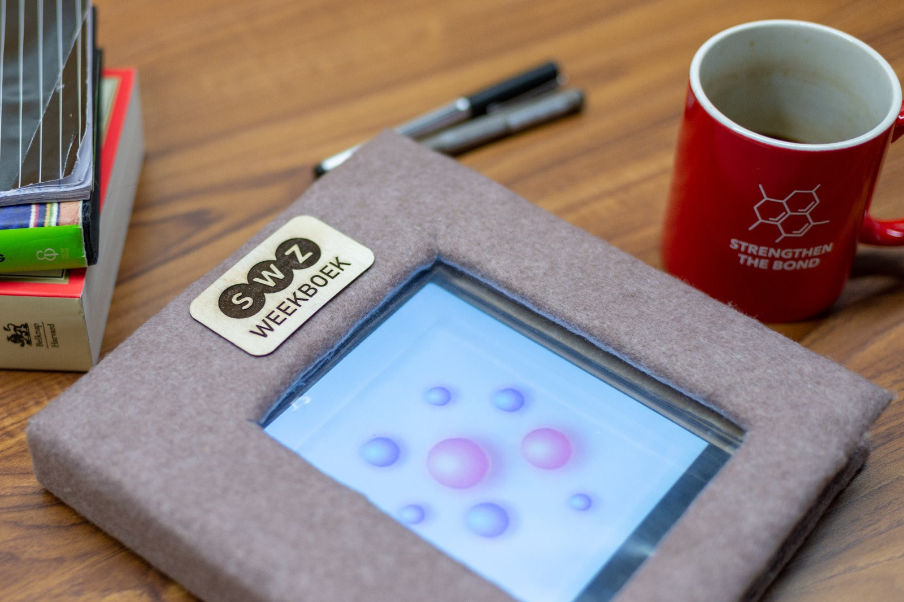
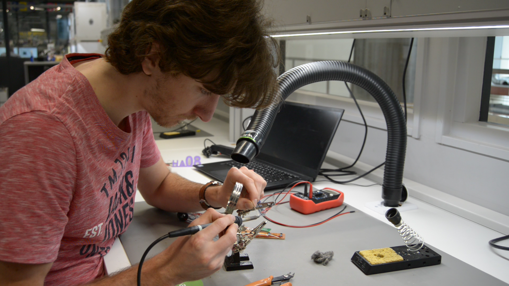

Weekboek is the result of a project in cooperation with SWZ care center. This care center mainly took care of
people with acquired brain injury at the time. During interviews held with the caregivers, but also two of the
clients of SWZ carecenter. The result of these interviews and many ideation sessions was Weekboek. A tangible
dayplanner which can be used by people in the carecenter to keep track of their day and stay in touch with the
carecenter even when at home. The idea evolved from the problems people with acquired brain injury experience
with keeping the structure in their day.
In this project the focus lay more on exploring expertise areas which I had less experience with before this
project. These expertise areas being user and society and business and entrepreneurship.
pictures of the interviewing process and the ideation process that followed.
During this project we realised that there could be a continuation of the project and because of personal goals
a analysis was made considering the stakeholders of such a hypothetic business.
During this project we realised that there could be a continuation of the project and because of personal goals
a analysis was made considering the stakeholders of such a hypothetic business.

After the project deadline we decided it was worth developing Weekboek to a functional prototype. The client was
happy with the result and were happy to help trying to turn the concept into a functional product.


.jpeg)
.png)